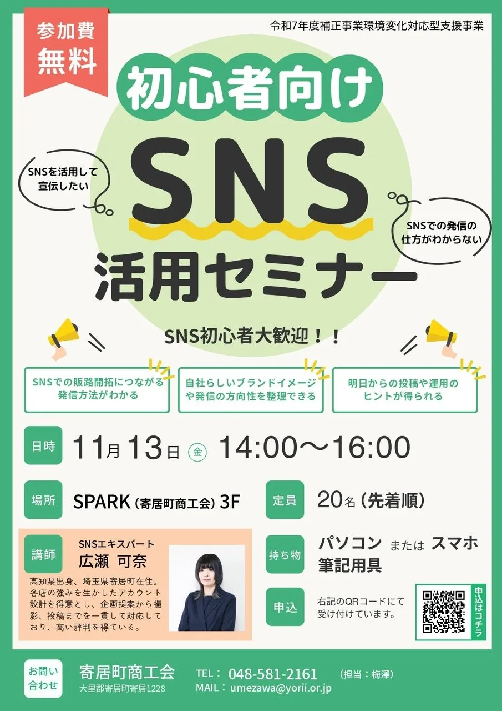

            <!-- 2026.11 寄居町商工会（「内容」「ポイント」は下書き。確認後に公開） -->
            <li class="record-item reveal">
              <details class="record-details">
                <summary class="record-summary">
                  <span class="record-date">2026.11</span>
                  <span class="record-body">
                    <span class="record-host">寄居町商工会</span>
                    <span class="record-title">初心者向けSNS活用セミナー</span>
                  </span>
                  <span class="record-toggle" aria-hidden="true"></span>
                </summary>
                <div class="record-detail has-poster">
                  <a class="record-poster" href="images/seminar-2026-11-yorii.webp" target="_blank" rel="noopener">
                    
                    <span class="record-poster-hint">タップで拡大</span>
                  </a>
                  <dl class="record-info">
                    <div><dt>開催日</dt><dd>2026年11月13日（金）14:00〜16:00</dd></div>
                    <div><dt>会場</dt><dd>SPARK（寄居町商工会）3階</dd></div>
                    <div><dt>対象</dt><dd>SNS初心者の方</dd></div>
                    <div><dt>内容</dt><dd>「SNSで宣伝したい」「発信の仕方がわからない」という方に向けて、販路開拓につながる発信方法と、自社らしいブランドイメージや発信の方向性の整理についてお伝えしました。</dd></div>
                    <div><dt>ポイント</dt><dd>はじめての方でも、明日からの投稿や運用にそのまま生かせるヒントを持ち帰っていただけることを大切にしました。</dd></div>
                  </dl>
                </div>
              </details>
            </li>
